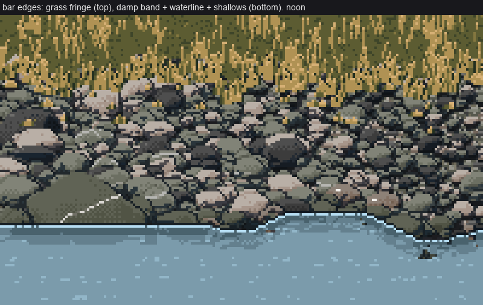
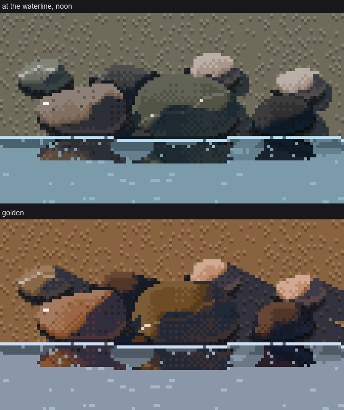
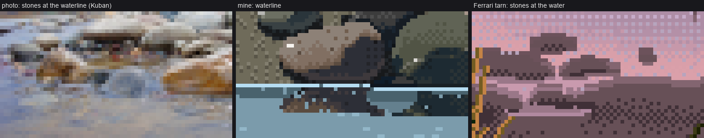
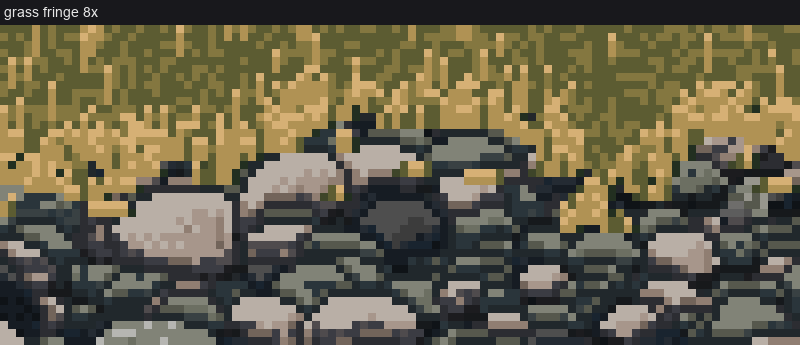
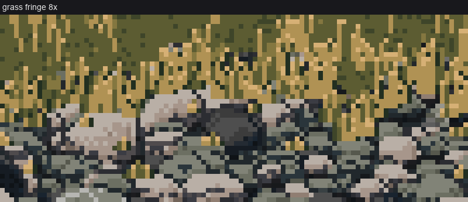

9. The bar's edges: water and grass
← packing a bar · front page · next: the technique as one call →
Read this page as work in progress. These are the least finished techniques I have. Some rules here clearly worked, and I'll mark which. The picture as a whole isn't at the level of pages 2–8.

The final stage 6: grass fringe at the top, gravel, a damp band, the waterline and water.
The water edge (water.apply_water, stage6.py)
From the dry bar down into the channel, the bar passes through these bands:
- Damp band. For 2–4 rows above the waterline, the matrix drops a step and the stones switch to the wet ramp (darker, a little more chroma). Worked.
python
damp = (yy > yw[None, :] - 4) & (yy <= yw[None, :])
cv.step[damp & g] = np.maximum(cv.step[damp & g] - 1, CONTACT)
cv.wet[damp & ~g] = 1
- The waterline. A row per column made of long flat runs with only gentle slopes, from
edges.clean_edge. Worked, after one mistake: my first waterline stepped in 1:1 zigzags like a saw (nb077 below).
python
yw = clean_edge(W, rng, base=int(H * 0.72), amp=3, seg=(8, 26), slopes=(0, 0, 0, 0.25, 0.5))
- The lap. A continuous 1-px light run along the waterline, broken only at the two sides of a stone that stands in the water. This is Ferrari's lap line from the tarn shore stones. Worked, after the Morse code below.
python
cc = cross_cols & ~(np.roll(cross_cols, 1) & np.roll(cross_cols, -1)) # only the stone's sides
for x in range(W):
y = int(yw[x]) + 1
if 0 <= y < H and not cc[x]:
wv[y, x] = W_GLINT
-
Where a stone meets the water, its last dry row is its darkest step (the wet contact). The submerged part shows as a darker ghost, fading after 4 rows.
-
The mirror. Everything above the surface, mirrored, for 7 rows (a bar is low). Each pixel stays in its own rock's ramp, with the range compressed: lights drop two steps, darks stay, and the first row (the underside) is darkest. One-row streaks cut through it. Partly worked: the rule is right, but at 7 rows under a low bar it's barely visible.
python
src = (2 * yw[None, :] - yy + 1).astype(int)
band = water & (depth >= 2) & (depth <= R + 1)
s_st = stone[srcc, xsg] & ~water[srcc, xsg]
comp = np.where(sv >= EDGE, np.maximum(sv - 2, SH_LIGHT), sv)
comp = np.where(depth == 2, np.minimum(comp, SH), comp)
streak = (rng.random(H) < 0.22)[:, None] | (rng.random((H, W)) < 0.05)
sel = band & s_st & ~streak & ~subm
- Open water. Base colour, with sparse dash rows one step lighter, from
palette.water_ramp: the sky's hue, value-compressed, with a glacial-silt teal pulling the darks. It works as a surface, and it's plain.

nb079. Trap: a randomly broken lap reads as Morse code (the channel student hit this four times). A lap is continuous.

nb092. After, at 8×.

nb063. Trap: my first reflection was a blue-grey checker blob that mirrored nothing, in the water's own colours. It has to be the thing itself, in its own colours, compressed.

nb077. Trap: a 1:1 zigzag waterline and fish-scale "shallows" (bed gravel ghosted through the water over 6 rows).
Honest comparison. Ferrari's water is the richest part of his pictures: it mirrors the whole world, sky gradient and far bank included, with a sheen band. Mine reflects only the bank's first few rows over a flat field. A braided river needs the sky mirrored in the channel, and I never built that.

Stage 4: wet cobbles at the waterline. Each wet stone gets one glint (TOP, near white), high on its lit face and toward the light, never on the silhouette. Placing it on the topmost lit pixel put it on the rim, as a stray white block.

Kuban photo at the waterline | mine | Ferrari's tarn shore stones.
The grass edge (edges.grass_band)
The rule came from SYNTHESIS and the master-copy student: a textured mass ends in a fringe, not a line. I applied it like this:
- The sod body stops 2 rows above the edge.
- Tufts of 3–6 blades fan from one foot, rooted 3–7 rows below the edge, so the tips break up over the stones.
- A few colonising tufts sit further out in the gravel.
- The ground right under the sod is shaded.
- Each blade is a clean run with a dark gap on its shadow side.
def blade(gstep, gmask, x, y, h, lean, lit):
px = x
for k in range(h):
yy = y - k
if lean and k and k % lean == 0:
px += np.sign(lean)
gstep[yy, px] = (G_TIP if k == h - 1 else G_LIT) if lit else (G_MID if k > h // 2 else G_OLIVE)
gx = px + (1 if lit else -1)
if not gmask[yy, gx] and k < h - 1:
gstep[yy, gx] = G_BLACK if lit else G_DARK # the dark gap beside the blade
# fringe: tufts rooted along the edge, breaking over the gravel
x = int(rng.integers(0, 3))
while x < W:
tuft(gstep, gmask, x, edge[x] + int(rng.integers(3, 8)), rng, hmax + 3)
x += int(rng.integers(2, 4))
In the sod body, lit blades gather in clumps from a noise field (smooth_noise(...) > 0.3: 30% blade density inside a clump, 4% outside), with varied heights and some lean.

nb080. Trap: evenly spaced ochre strands of one height over flat olive. The critic said "barcode", which was fair.

After, at 8×: clumped and varied, with tips breaking over the stones. Better, but still streaky next to Ferrari's grass, and the colonising tufts read as small ochre dashes. The grass students' pages are the place to learn grass. Take from here only the fringe idea: roots below the edge, tips over the stones.
What I'd do next
- Mirror the sky and far bank in the channel, not just the bar.
- Add a sheen band under the waterline.
- Make scrub and willow edges (I didn't paint any).
- Borrow a proper grass technique instead of mine.